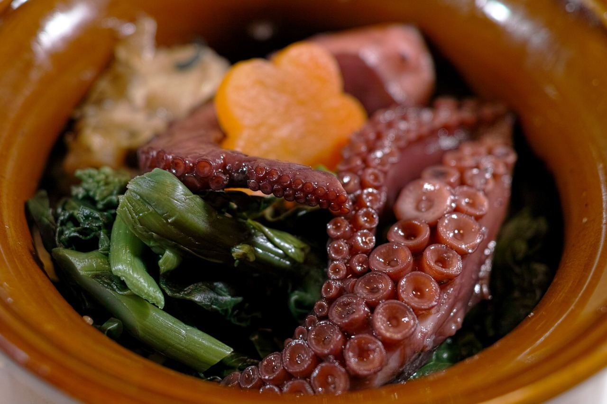

Ukiyo
Ukiyo (meaning The Floating World) is a new place where you will have the pleasure to taste reinvented Japanese dishes and to discover the Japanese culture in an original and peaceful way. ようこそ - Yokoso!
News
Discover our lunch menu for only 15€!
Braised and marinated spicy octopus ramen with its wheat noodles.
Along with a glass of Chardonnay white wine.

Braised and marinated spicy octopus ramen with its wheat noodles.
Along with a glass of Chardonnay white wine.
Events
The 1st of June (2-5pm): Matcha tea workshop. Join us as we welcome spring and enjoy an afternoon dedicated to Matcha tea. In partnership with the Kenryo Tea Room, you sample different varieties of Matcha, and learn about the health benefits and origin of this popular beverage.